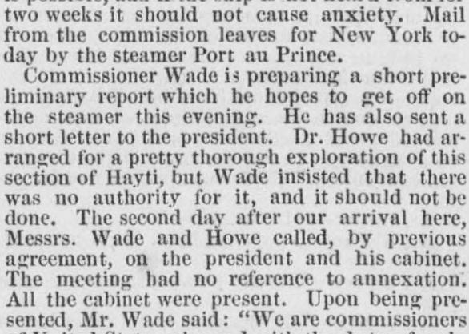

Howe had ar ranged for a pretty thorough exploration of thisHowe había organizado una exploración bastante completa de esta
Worcester Daily Spy. Worcester [Mass.], March 17, 1871. Page 2. Published by John Milton Earle. A daily newspaper, 1850–1888.Worcester Daily Spy. Worcester [Mass.], 17 de marzo de 1871. Página 2. Publicado por John Milton Earle. Periódico diario, 1850–1888. View the originalVer el original

 See the full pageVer la página completa
See the full pageVer la página completa
According to the Worcester daily spy on March 17, 1871, U.S. commissioners Messrs. Wade and Howe met with the president of the Haitian republic and his cabinet. Mr. Wade stated that the commissioners were charged with making inquiries regarding the Dominican republic with a view toward more intimate relations, though the meeting itself had no reference to annexation. President Saget reciprocated the expressions of friendship and offered to aid their researches.Según el Worcester daily spy del 17 de marzo de 1871, los comisionados estadounidenses, señores Wade y Howe, se entrevistaron con el presidente de la república haitiana y su gabinete. El Sr. Wade manifestó que la comisión tenía a su cargo realizar indagaciones relativas a la República Dominicana con miras a entablar vínculos más estrechos, aun cuando la conferencia en sí no versaba sobre la anexión. El presidente Saget correspondió a las demostraciones de afecto y brindó facilidades para sus investigaciones.
FULL TEXT:TEXTO COMPLETO:
Worcester Daily Spy March 17, 187117 de marzo de 1871
PORT AU PRINCE, March 7.—The commission reached here the second of March, from Azua. All are in excellent health. They will wait here for Commissioner White, who is expected here by the 10th, bringing with him two scientific expeditions, under Professors Blake and Ward, that crossed before him. The Tennessee will then start immediately for home, touching at Santiago de Cuba and Key West for coal. The questions of debt and disputed boundary are the most important since the last dispatches. The Haytiens are bitterly opposed to annexation. The commissioners, however, were received civilly. Cabral's strength consists almost wholly of Haytien support. The information that the Tennessee had been reported missing first reached the party here. The statement of Gen. Banks that she was unseaworthy was received with great indignation, and denounced as heartlessly cruel. She is one of the strongest and best ships in the navy, with a select company of efficient officers, who expect now, unless delayed by the Nantasket, to reach home by the 25th of March, or, at the farthest, the 1st of April. A delay of one week from this cause is possible, and if the ship is not heard from for two weeks it should not cause anxiety. Mail from the commission leaves for New York to-day by the steamer Port au Prince.PUERTO PRÍNCIPE, 7 de marzo.—La comisión llegó aquí el 2 de marzo, procedente de Azua. Todos están en excelente salud. Esperarán aquí al comisionado White, quien se espera aquí para el 10, trayendo con él dos expediciones científicas, bajo los profesores Blake y Ward, que cruzaron antes que él. El Tennessee partirá entonces inmediatamente hacia casa, tocando en Santiago de Cuba y Cayo Hueso para cargar carbón. Las cuestiones de la deuda y la frontera disputada son las más importantes desde los últimos despachos. Los haitianos están amargamente opuestos a la anexión. Los comisionados, sin embargo, fueron recibidos civilmente. La fuerza de Cabral consiste casi enteramente en el apoyo haitiano. La información de que el Tennessee había sido reportado desaparecido llegó primero al grupo aquí. La declaración del general Banks de que no era apto para navegar fue recibida con gran indignación, y denunciada como despiadadamente cruel. Es uno de los buques más fuertes y mejores de la marina, con una selecta compañía de oficiales eficientes, quienes esperan ahora, a menos que sean demorados por el Nantasket, llegar a casa para el 25 de marzo, o, a más tardar, el 1 de abril. Una demora de una semana por esta causa es posible, y si no se sabe del buque por dos semanas no debe causar ansiedad. El correo de la comisión parte hoy hacia Nueva York en el vapor Port au Prince.
[Editor's note: the paper writes of the east as part of Hayti. From 1822 to 1844 the Dominican Republic was held by Haitian military occupation, against its people's will; it restored its independence on February 27, 1844.][Nota del editor: el periódico habla del este como parte de Haití. De 1822 a 1844 la República Dominicana estuvo bajo ocupación militar haitiana, contra la voluntad de su pueblo; restauró su independencia el 27 de febrero de 1844.]